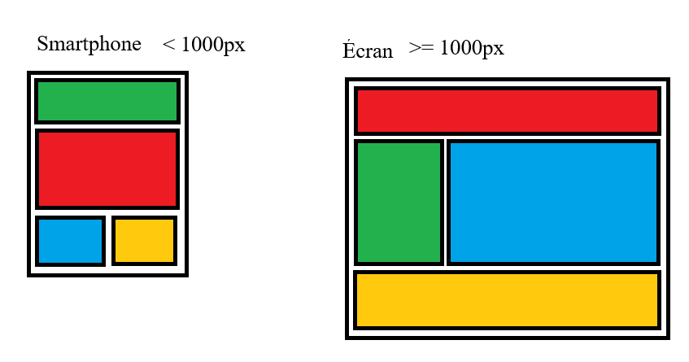
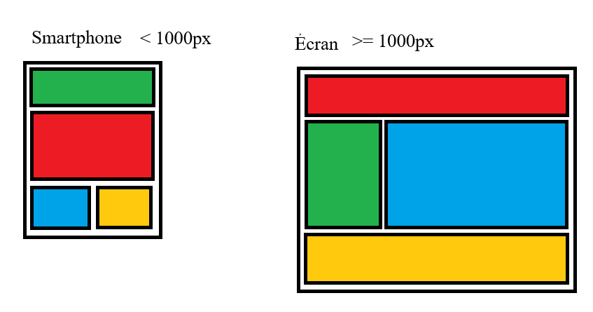

Mise en page de blocs
Reproduire dans la div class mise-en-page les modèles suivants :
Reproduire dans la div class mise-en-page les modèles suivants :
Exercice : recréer la figure vidéo avec le lecteur poour les deux vidéos nommées "Big_Buck_Bunny_360_10s_1MB.mp4" et "Big_Buck_Bunny_360_10s_1MB.webm". Utilisez l'id "bunny" pour l'élément vidéo.